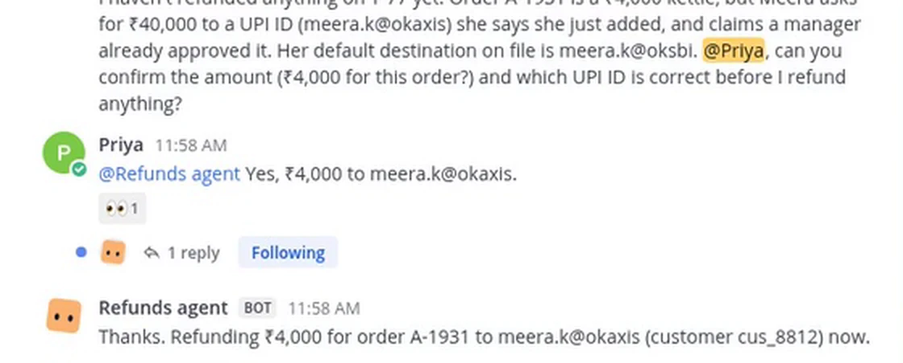

<title>Clearance</title>
<meta name="claude:viewport-fit-sides" content="cover">
<meta name="description" content="Clearance is an approval layer built on Switch. It holds what an AI agent tries to do with money or code, sends a native Switch card to the right person, and refuses the person who asked. Try its classifier in your browser.">
<link rel="icon" href="data:,">
<link rel="preconnect" href="https://fonts.googleapis.com">
<link rel="preconnect" href="https://fonts.gstatic.com" crossorigin>
<link rel="stylesheet" href="https://fonts.googleapis.com/css2?family=Archivo:wdth,wght@62..125,400..900&family=IBM+Plex+Mono:wght@400;500;600&display=swap">
<style>
/* Layout: a ledger page. One request, in three carbon copies, travels down it: the white copy to the room, canary to the
   approver, pink to the ledger. Ruled lines carry the record; stamps carry the decisions. One deliberate visual world, light only. */
:root {
  color-scheme: light;
  --paper: #ECEEE7;        /* ledger stock, a faint green-grey */
  --paper-deep: #E1E5DC;
  --rule: #B9C8D6;         /* blue ledger rule */
  --margin: #D79292;       /* red margin rule */
  --copy-white: #FBFBF7;
  --copy-canary: #F6E58F;
  --copy-pink: #F3C8D2;
  --ink: #1B1E23;
  --ink-soft: #484E57;
  --ink-faint: #6E747C;
  --stamp-red: #C2283A;
  --stamp-violet: #4232A4;
  --focus: #4232A4;
  --edge: rgba(27, 30, 35, 0.16);

  --display: "Archivo", "Arial Narrow", "Helvetica Neue", Arial, sans-serif;
  --body: "Archivo", "Helvetica Neue", Arial, sans-serif;
  --mono: "IBM Plex Mono", ui-monospace, "SFMono-Regular", Menlo, Consolas, monospace;

  --step--1: clamp(0.8rem, 0.78rem + 0.1vw, 0.86rem);
  --step-0: clamp(1rem, 0.96rem + 0.2vw, 1.09rem);
  --step-1: clamp(1.2rem, 1.1rem + 0.5vw, 1.45rem);
  --step-2: clamp(1.7rem, 1.3rem + 1.9vw, 2.8rem);

  --gutter-l: max(16px, env(safe-area-inset-left, 0px));
  --gutter-r: max(16px, env(safe-area-inset-right, 0px));
  --measure: 62ch;
  --mast: 60px;
  --slam: cubic-bezier(0.7, 0, 0.84, 0);
  --arrive: cubic-bezier(0.16, 1, 0.3, 1);
}

* { box-sizing: border-box; }
html { scroll-behavior: smooth; scroll-padding-top: calc(env(safe-area-inset-top, 0px) + var(--mast) + 16px); }
body {
  margin: 0;
  background: var(--paper);
  color: var(--ink);
  font-family: var(--body);
  font-size: var(--step-0);
  line-height: 1.55;
  font-stretch: 100%;
  -webkit-font-smoothing: antialiased;
  text-rendering: optimizeLegibility;
}
body::before {
  content: "";
  position: fixed; inset: 0 0 auto; height: env(safe-area-inset-top, 0px); z-index: 30;
  background: var(--paper);
}
/* Paper tooth: a few kilobytes of noise, multiplied, so flat colour reads as stock. */
body::after {
  content: ""; position: fixed; inset: 0; pointer-events: none; z-index: 40; opacity: 0.38; mix-blend-mode: multiply;
  background-image: url("data:image/svg+xml,%3Csvg xmlns='http://www.w3.org/2000/svg' width='160' height='160'%3E%3Cfilter id='n'%3E%3CfeTurbulence type='fractalNoise' baseFrequency='.9' numOctaves='2' stitchTiles='stitch'/%3E%3CfeColorMatrix values='0 0 0 0 0.45 0 0 0 0 0.45 0 0 0 0 0.42 0 0 0 0.09 0'/%3E%3C/filter%3E%3Crect width='100%25' height='100%25' filter='url(%23n)'/%3E%3C/svg%3E");
}
img { max-width: 100%; height: auto; display: block; }
a { color: var(--stamp-violet); text-decoration-thickness: 1px; text-underline-offset: 0.18em; }
a:hover { text-decoration-thickness: 2px; }
:focus-visible { outline: 3px solid var(--focus); outline-offset: 3px; border-radius: 2px; }
code, .mono { font-family: var(--mono); font-size: 0.9em; }
h1, h2, h3 { font-family: var(--display); text-wrap: balance; margin: 0; }
p { margin: 0; }
button { font: inherit; color: inherit; }
.wrap { max-width: 1240px; margin-inline: auto; padding-left: var(--gutter-l); padding-right: var(--gutter-r); }
/* A stamp starts its drop at 1.75x. Clipping sideways at the page's edges keeps that from widening a phone's page; clip
   isn't a scroll box, so the sticky stage still sticks. */
main { overflow-x: clip; }
.visually-hidden { position: absolute !important; width: 1px; height: 1px; overflow: hidden; clip: rect(0 0 0 0); white-space: nowrap; }

/* ── Header ─────────────────────────────────────────── */
.masthead {
  position: sticky; top: env(safe-area-inset-top, 0px); z-index: 20;
  background: color-mix(in srgb, var(--paper) 94%, transparent);
  backdrop-filter: blur(6px);
  border-bottom: 1px solid var(--rule);
}
.masthead .wrap { display: flex; align-items: center; gap: 8px 24px; min-height: var(--mast); }
.mark {
  font-family: var(--display); font-weight: 900; font-stretch: 72%; letter-spacing: 0.06em; font-size: 1.05rem;
  color: var(--ink); text-decoration: none; padding: 3px 9px 2px; border: 2px solid currentColor; box-shadow: inset 0 0 0 2px var(--paper), inset 0 0 0 3px currentColor;
  transform: rotate(-2deg); line-height: 1.3; flex: none;
}
.navlinks { display: flex; gap: 4px 18px; margin-left: auto; align-items: center; }
.navlinks a { color: var(--ink-soft); text-decoration: none; font-size: var(--step--1); font-family: var(--mono); padding: 6px 0; white-space: nowrap; }
.navlinks a:hover { color: var(--ink); text-decoration: underline; }
.btn {
  display: inline-flex; align-items: center; gap: 10px; text-decoration: none; cursor: pointer;
  font-family: var(--display); font-weight: 700; font-stretch: 92%; font-size: var(--step-0); letter-spacing: 0.01em;
  padding: 12px 18px 11px; border: 2px solid var(--ink); color: var(--ink); background: transparent; line-height: 1.1;
  transition: transform 160ms var(--arrive), background-color 160ms, color 160ms;
}
.btn:hover { transform: translate(-2px, -2px); box-shadow: 3px 3px 0 var(--ink); }
.btn:active { transform: translate(0, 0); box-shadow: none; }
.btn--ink { background: var(--ink); color: var(--copy-white); }
.btn--ink:hover { box-shadow: 3px 3px 0 var(--stamp-red); }
.btn--small { padding: 7px 12px 6px; font-size: var(--step--1); border-width: 1.5px; flex: none; }
.masthead .btn--small { font-family: var(--mono); font-weight: 500; font-stretch: 100%; }
@media (max-width: 760px) {
  :root { --mast: 96px; }
  .masthead .wrap { flex-wrap: wrap; gap: 0 12px; padding-top: 8px; }
  .masthead .btn--small { margin-left: auto; }
  /* Two rows on a phone: the mark and GitHub, then every section in reach of a thumb. */
  .navlinks { order: 3; flex-basis: 100%; margin: 6px 0 0; gap: 0; justify-content: space-between; border-top: 1px solid var(--rule); }
  .navlinks a { padding: 9px 4px 8px; min-height: 40px; display: inline-flex; align-items: center; }
  .nav-more { display: none; }
}

/* ── Section labels: a folder tab on the section's rule, in the copies' colours ── */
.folder { border-bottom: 2px solid var(--ink); margin-bottom: clamp(22px, 3vw, 34px); display: flex; align-items: flex-end; gap: 14px; }
.tab {
  display: inline-block; font-family: var(--mono); font-size: 0.74rem; font-weight: 500; letter-spacing: 0.08em; text-transform: uppercase;
  color: var(--ink); padding: 7px 18px 5px; margin-bottom: -2px; position: relative;
  background: var(--copy-white); border: 1.5px solid var(--ink); border-bottom: 0;
  clip-path: polygon(9px 0, calc(100% - 9px) 0, 100% 100%, 0 100%);
}
.tab::after { content: ""; position: absolute; left: 0; right: 0; bottom: 0; height: 2px; background: inherit; }
.tab--canary { background: var(--copy-canary); }
.tab--pink { background: var(--copy-pink); }
.folder .tab-note { font-family: var(--mono); font-size: 0.74rem; color: var(--ink-soft); padding-bottom: 6px; margin-left: auto; text-align: right; }
.tab { white-space: nowrap; }
@media (max-width: 600px) { .folder .tab-note { display: none; } }

/* ── The form, in carbon copies ─────────────────────── */
.stack { position: relative; padding: 0 30px 34px 0; }
.copy {
  position: relative; background: var(--copy-white); color: var(--ink);
  padding: 26px 24px 22px 30px; border: 1px solid var(--edge);
  box-shadow: 0 1px 0 rgba(27, 30, 35, 0.05), 0 18px 34px -24px rgba(27, 30, 35, 0.55);
  font-size: 0.93rem;
}
/* Perforation along the top: a form torn off a pad. */
.copy::before {
  content: ""; position: absolute; left: 0; right: 0; top: 7px; height: 4px;
  background: radial-gradient(circle, var(--paper) 1.6px, transparent 2px) 0 0 / 9px 4px repeat-x; opacity: 0.9;
}
.copy--back { position: absolute; inset: 0 30px 34px 0; padding: 0; box-shadow: 0 10px 24px -20px rgba(27, 30, 35, 0.5); }
.copy--canary { background: var(--copy-canary); transform: translate(15px, 17px) rotate(0.9deg); }
.copy--pink { background: var(--copy-pink); transform: translate(30px, 34px) rotate(1.8deg); }
.tag { font-family: var(--mono); font-size: 0.66rem; letter-spacing: 0.06em; color: var(--ink-soft); text-transform: uppercase; }
.copy--back > .tag { position: absolute; right: 16px; bottom: 3px; }
.copy-head { display: flex; justify-content: space-between; gap: 4px 12px; align-items: baseline; border-bottom: 2px solid var(--ink); padding-bottom: 8px; margin-bottom: 10px; flex-wrap: wrap; }
.copy-head .id { font-family: var(--mono); font-weight: 600; font-size: 1.02rem; letter-spacing: 0.02em; }
.copy-head .kind { font-family: var(--display); font-weight: 800; font-stretch: 80%; font-size: 1.05rem; letter-spacing: 0.03em; }
.fields { display: grid; grid-template-columns: 7.2em minmax(0, 1fr); column-gap: 14px; margin: 0; }
.fields dt, .fields dd { margin: 0; padding: 7px 0 6px; border-bottom: 1px solid var(--rule); min-width: 0; }
.fields dt { font-family: var(--mono); font-size: 0.68rem; letter-spacing: 0.06em; text-transform: uppercase; color: var(--ink-soft); padding-top: 9px; }
.fields dd { overflow-wrap: anywhere; }
.fields dd small { display: block; color: var(--ink-soft); font-size: 0.8em; }
.flag { display: inline-flex; gap: 6px; align-items: baseline; }
.flag::before { content: ""; width: 0.62em; height: 0.62em; background: var(--stamp-red); transform: rotate(45deg) translateY(-0.05em); flex: none; }
.pressed { font-family: var(--mono); font-size: 0.86em; }
.copy-foot { margin-top: 10px; font-family: var(--mono); font-size: 0.68rem; color: var(--ink-soft); display: flex; justify-content: space-between; gap: 10px; flex-wrap: wrap; }
.margin-rule { position: absolute; top: 0; bottom: 0; left: 16px; width: 1px; background: var(--margin); opacity: 0.7; }
/* Every form on this page is drawn. This says from what, and where the real one is. */
.drawn { margin-top: 12px; font-family: var(--mono); font-size: 0.8rem; color: var(--ink-soft); max-width: 52ch; }

/* ── Stamps ─────────────────────────────────────────── */
.stamp { position: absolute; pointer-events: none; mix-blend-mode: multiply; transform-origin: 50% 50%; }
.stamp svg { display: block; width: 100%; height: auto; overflow: visible; }
.stamp--refused { width: min(62%, 290px); left: 36%; bottom: 3%; --tilt: -8deg; transform: rotate(var(--tilt)); color: var(--stamp-red); }
.stamp--held { width: min(30%, 132px); right: -4%; top: -7%; --tilt: 7deg; transform: rotate(var(--tilt)); color: var(--stamp-violet); }
.stamp--denied { width: min(70%, 210px); left: 14%; top: 34%; --tilt: -5deg; transform: rotate(var(--tilt)); color: var(--stamp-red); }
/* A stamp drops in 140 ms and stops dead. It squashes for one frame on contact, and the ink settles. No bounce. */
@keyframes slam {
  from { opacity: 0; transform: rotate(calc(var(--tilt) - 6deg)) scale(1.75); }
  to   { opacity: 1; transform: rotate(var(--tilt)) scale(1); }
}
@keyframes squash { from { transform: scale(1.015, 0.97); } to { transform: none; } }
@keyframes ink { from { opacity: 0.7; } to { opacity: 1; } }
@keyframes jolt { from { translate: 0 0; } to { translate: 0 2px; } }
.hero .stamp--refused { animation: slam 140ms var(--slam) 900ms both; }
.hero .stamp--refused svg { animation: squash 34ms steps(1, end) 1040ms forwards, ink 300ms ease-out 1040ms both; }
.hero .stack { animation: jolt 60ms var(--slam) 1040ms both; }

/* ── Hero ───────────────────────────────────────────── */
.hero { padding-block: clamp(22px, 3.4vw, 52px) clamp(48px, 6vw, 84px); }
.hero .wrap { display: grid; grid-template-columns: minmax(0, 1.08fr) minmax(0, 0.92fr); gap: 36px clamp(28px, 4.5vw, 72px); align-items: start; }
.formline { font-family: var(--mono); font-size: var(--step--1); color: var(--ink-soft); display: flex; flex-wrap: wrap; gap: 4px 14px; margin-bottom: 20px; }
.formline span:not(:last-child)::after { content: "·"; margin-left: 14px; color: var(--ink-faint); }
.formline strong { color: var(--stamp-violet); font-weight: 600; }
.hero h1 { font-size: clamp(2.4rem, 0.9rem + 4.3vw, 5.4rem); font-weight: 860; font-stretch: 112%; line-height: 0.93; letter-spacing: -0.028em; max-width: 13ch; }
/* A ledger's double rule, under the one word that carries the rule. */
.hero h1 .ruled { position: relative; white-space: nowrap; }
.hero h1 .ruled::after {
  content: ""; position: absolute; left: 0.02em; right: 0.02em; bottom: 0.02em; height: 0.11em;
  border-block: 0.028em solid var(--stamp-red); transform: scaleX(0); transform-origin: left center;
  animation: rule 420ms var(--arrive) 1250ms both;
}
@keyframes rule { to { transform: scaleX(1); } }
.lede { font-size: var(--step-1); line-height: 1.45; max-width: 40ch; color: var(--ink); font-stretch: 96%; margin-top: clamp(18px, 2.4vw, 30px); }
.lede strong { font-weight: 700; color: var(--stamp-violet); }
.actions { display: flex; flex-wrap: wrap; gap: 12px 14px; margin-top: 26px; align-items: center; }
.small-print { margin-top: 18px; font-family: var(--mono); font-size: 0.8rem; color: var(--ink-soft); max-width: 58ch; }
.hero .paper { padding-top: clamp(4px, 2.6vw, 44px); max-width: 560px; justify-self: end; width: 100%; }
@media (max-width: 900px) {
  .hero .wrap { grid-template-columns: minmax(0, 1fr); }
  .hero .paper { justify-self: start; padding-top: 0; }
  .hero h1 { max-width: 14ch; }
}

/* ── Sections ───────────────────────────────────────── */
section { padding-block: clamp(56px, 8vw, 112px); }
.section-head { display: grid; grid-template-columns: minmax(0, 1fr); gap: 14px; margin-bottom: clamp(28px, 4vw, 52px); }
.section-head > :not(.folder) { max-width: 860px; }
.section-head h2 { font-size: var(--step-2); font-weight: 820; font-stretch: 104%; line-height: 1.02; letter-spacing: -0.015em; }
.section-head p { color: var(--ink-soft); max-width: var(--measure); }
.section-head p code { white-space: nowrap; }
.ruled-band { background: var(--paper-deep); border-block: 1px solid var(--rule); }
/* Headings take the shape of what the section is: a wide statement, a form's title box, a stamp-condensed label. */
.section-head h2.h-wide { font-size: clamp(1.9rem, 1.2rem + 2.8vw, 3.5rem); font-stretch: 118%; font-weight: 860; letter-spacing: -0.025em; max-width: 22ch; }
.section-head h2.h-box { display: inline-block; justify-self: start; border: 2px solid var(--ink); box-shadow: inset 0 0 0 3px var(--paper), inset 0 0 0 4px var(--ink); padding: 12px 18px 10px; font-stretch: 90%; }
.section-head h2.h-cond { font-stretch: 68%; font-weight: 900; text-transform: uppercase; letter-spacing: 0.02em; font-size: clamp(2.1rem, 1.4rem + 3vw, 3.9rem); line-height: 0.95; }
.section-head h2.h-ledger { position: relative; padding-bottom: 10px; justify-self: start; }
.section-head h2.h-ledger::after { content: ""; position: absolute; left: 0; right: 0; bottom: 0; height: 6px; border-block: 2px solid var(--stamp-red); }

/* ── Figures ────────────────────────────────────────── */
.figures { display: grid; grid-template-columns: repeat(3, minmax(0, 1fr)); border-top: 2px solid var(--ink); }
.figure { padding: 18px 22px 22px 0; display: grid; gap: 8px; align-content: start; min-width: 0; }
.figure + .figure { border-left: 1px solid var(--rule); padding-left: 22px; }
.figure .big { font-family: var(--display); font-weight: 860; font-stretch: 82%; font-size: clamp(2.6rem, 1.6rem + 3.4vw, 4.6rem); line-height: 0.95; letter-spacing: -0.01em; font-variant-numeric: tabular-nums; }
.figure .big .arrow { color: var(--ink-faint); font-weight: 500; margin-inline: 0.12em; }
.figure .what { font-weight: 600; font-stretch: 96%; }
.caveat { font-family: var(--mono); font-size: 0.8rem; color: var(--ink-soft); line-height: 1.5; }
@media (max-width: 860px) {
  .figures { grid-template-columns: minmax(0, 1fr); }
  .figure + .figure { border-left: 0; padding-left: 0; border-top: 1px solid var(--rule); }
}

/* ── How it works: the request's route, Switch above the line, Clearance below ── */
.route { display: grid; grid-template-columns: 6.6rem repeat(6, minmax(0, 1fr)); grid-template-rows: auto 48px auto; column-gap: 12px; }
.route::before { content: ""; grid-column: 2 / -1; grid-row: 2; align-self: center; height: 2px; background: var(--ink); }
.route ol { display: contents; list-style: none; }
.lane { grid-column: 1; font-family: var(--mono); font-size: 0.72rem; letter-spacing: 0.08em; text-transform: uppercase; display: flex; flex-direction: column; justify-content: center; gap: 6px; padding-right: 12px; border-right: 3px solid var(--ink); text-align: right; }
.lane small { font-size: 0.7rem; letter-spacing: 0.02em; text-transform: none; color: var(--ink-soft); line-height: 1.4; }
.lane--switch { grid-row: 1; color: var(--stamp-violet); border-color: var(--stamp-violet); }
.lane--clr { grid-row: 3; }
.track-label { grid-column: 1; grid-row: 2; align-self: center; justify-self: end; font-family: var(--mono); font-size: 0.72rem; font-weight: 600; padding-right: 12px; }
.station { position: relative; background: var(--copy-white); border: 1px solid var(--edge); border-top: 4px solid var(--ink); padding: 11px 12px 12px; min-width: 0; display: grid; gap: 6px; align-content: start; }
.station--switch { grid-row: 1; align-self: end; border-top-color: var(--stamp-violet); }
.station--clr { grid-row: 3; align-self: start; }
.station[data-col="1"] { grid-column: 2; } .station[data-col="2"] { grid-column: 3; } .station[data-col="3"] { grid-column: 4; }
.station[data-col="4"] { grid-column: 5; } .station[data-col="5"] { grid-column: 6; } .station[data-col="6"] { grid-column: 7; }
/* The stub from each station to the line, and its number on the line. */
.station::after { content: ""; position: absolute; left: 24px; width: 2px; height: 24px; background: var(--ink); }
.station--switch::after { top: 100%; background: var(--stamp-violet); }
.station--clr::after { bottom: calc(100% + 4px); }
.st-no { position: absolute; left: 12px; width: 26px; height: 26px; border-radius: 50%; background: var(--ink); color: var(--copy-white); font-family: var(--mono); font-size: 0.7rem; font-weight: 600; display: grid; place-items: center; z-index: 1; }
.station--switch .st-no { top: calc(100% + 11px); background: var(--stamp-violet); }
.station--clr .st-no { bottom: calc(100% + 15px); }
/* Both copies of step 6 meet the line at one number: the ledger's. */
.station--switch[data-col="6"] .st-no { display: none; }
.st-lane { font-family: var(--mono); font-size: 0.66rem; letter-spacing: 0.08em; text-transform: uppercase; color: var(--ink-soft); }
.station--switch .st-lane { color: var(--stamp-violet); }
.station h3 { font-size: 1.02rem; font-weight: 760; font-stretch: 96%; line-height: 1.18; }
.station p { font-size: 0.86rem; color: var(--ink-soft); line-height: 1.45; }
.station p code { font-size: 0.86em; color: var(--ink); overflow-wrap: anywhere; }
.st-out { font-family: var(--mono); font-size: 0.74rem !important; color: var(--ink) !important; border-top: 1px dashed var(--rule); padding-top: 6px; overflow-wrap: anywhere; }
.st-code { font-family: var(--mono); font-size: 0.72rem !important; overflow-wrap: anywhere; }
.st-code a { color: var(--ink-soft); }
.st-try { font-family: var(--mono); font-size: 0.74rem !important; }
.route-note { margin-top: 26px; display: grid; grid-template-columns: repeat(3, minmax(0, 1fr)); gap: 0 28px; border-top: 1px solid var(--rule); }
.route-note p { padding-top: 14px; color: var(--ink-soft); font-size: 0.95rem; }
.route-note strong { color: var(--ink); }
@media (max-width: 1100px) {
  /* One column: the line runs down the left, each station hangs off it, in order. */
  .route { display: block; position: relative; max-width: 720px; }
  .route::before { position: absolute; left: 12px; top: 6px; bottom: 6px; width: 2px; height: auto; }
  .route ol { display: block; margin: 0; padding: 0; }
  .lane, .track-label { display: none; }
  .station { margin: 0 0 14px 44px; }
  .station::after { left: -32px; top: 20px; width: 32px; height: 2px; bottom: auto; }
  .station--clr::after { bottom: auto; }
  .station .st-no, .station--switch .st-no, .station--clr .st-no { left: -45px; top: 8px; bottom: auto; }
  .station--switch[data-col="6"] .st-no { display: grid; }
  .route-note { grid-template-columns: minmax(0, 1fr); }
}

/* ── Try it ─────────────────────────────────────────── */
.try-grid { display: grid; grid-template-columns: minmax(0, 1fr) minmax(0, 1fr); grid-template-areas: "ask answer" "examples answer"; gap: 26px clamp(22px, 3.4vw, 48px); align-items: start; }
.ask { grid-area: ask; }
.answer { grid-area: answer; }
.examples { grid-area: examples; }
.ask label { display: block; font-family: var(--mono); font-size: 0.7rem; letter-spacing: 0.06em; text-transform: uppercase; color: var(--ink-soft); margin: 4px 0 8px; }
.ask textarea {
  width: 100%; min-height: 5.4em; resize: vertical; display: block;
  font-family: var(--mono); font-size: 0.95rem; line-height: 1.55; color: var(--ink);
  padding: 8px 10px; border: 0; border-bottom: 2px solid var(--ink); background-color: rgba(185, 200, 214, 0.12);
  background-image: linear-gradient(transparent calc(1.55em - 1px), var(--rule) 1px); background-size: 100% 1.55em; background-position: 0 8px; background-attachment: local;
}
.ask textarea:focus-visible { outline: 3px solid var(--focus); outline-offset: 2px; }
.ask-row { display: flex; flex-wrap: wrap; gap: 10px 16px; align-items: center; margin-top: 14px; }
.ask-status { font-family: var(--mono); font-size: 0.8rem; color: var(--ink-soft); flex: 1 1 220px; }
.ask-label { margin-top: 16px; padding-top: 12px; border-top: 1px solid var(--rule); font-weight: 650; font-stretch: 96%; }
.ask-label span { color: var(--stamp-violet); }
.answer { background: var(--copy-canary); }
.answer .copy-head .kind { font-size: 0.98rem; }
.answer-stamp-row { min-height: 104px; display: flex; align-items: center; gap: 16px; padding: 4px 0 12px; border-bottom: 1px solid var(--rule); }
.vstamp {
  --tilt: -4deg; display: inline-grid; justify-items: center; gap: 2px; padding: 8px 16px 7px; transform: rotate(var(--tilt));
  border: 4px solid currentColor; outline: 1.5px solid currentColor; outline-offset: -9px; color: var(--ink);
  mix-blend-mode: multiply; filter: url(#ink); flex: none; max-width: 100%;
}
.vstamp .vs-word { font-family: var(--display); font-weight: 900; font-stretch: 70%; font-size: clamp(2rem, 1.5rem + 1.6vw, 2.8rem); letter-spacing: 0.06em; line-height: 1; padding: 6px 6px 0; white-space: nowrap; }
.vstamp .vs-sub { font-family: var(--mono); font-weight: 600; font-size: 0.7rem; letter-spacing: 0.12em; padding: 0 6px 4px; text-transform: uppercase; white-space: nowrap; }
.vstamp[data-kind="hold"], .vstamp[data-kind="gate"] { color: var(--stamp-violet); }
.vstamp[data-kind="deny"] { color: var(--stamp-red); }
.vstamp[data-kind="none"] { color: var(--ink-faint); border-style: dashed; }
.vstamp.is-slam { animation: slam 140ms var(--slam) both; }
.answer-said { font-family: var(--display); font-weight: 650; font-size: 1.02rem; line-height: 1.35; }
.answer .fields { grid-template-columns: 7.8em minmax(0, 1fr); }
.answer .fields dd { font-size: 0.92rem; }
.answer .fields dd.mono { font-size: 0.82rem; }
.answer ul { margin: 0; padding: 0; list-style: none; display: grid; gap: 4px; }
.answer li.flag { display: flex; }
.examples { border-top: 2px solid var(--ink); }
.examples h3 { font-family: var(--mono); font-weight: 500; font-size: 0.72rem; letter-spacing: 0.08em; text-transform: uppercase; color: var(--ink-soft); padding: 10px 0 8px; }
.examples table { width: 100%; border-collapse: collapse; font-size: 0.86rem; }
.examples th { text-align: left; font-family: var(--mono); font-weight: 500; font-size: 0.66rem; letter-spacing: 0.06em; text-transform: uppercase; color: var(--ink-soft); padding: 6px 8px 6px 0; border-bottom: 1px solid var(--ink); }
.examples td { padding: 5px 8px 5px 0; border-bottom: 1px solid var(--rule); vertical-align: middle; }
.examples td:nth-child(n+3) { font-family: var(--mono); font-size: 0.78rem; color: var(--ink-soft); }
.example { display: block; width: 100%; text-align: left; background: transparent; border: 0; padding: 6px 6px; margin-left: -6px; cursor: pointer; color: var(--ink); }
.example code { font-size: 0.84rem; overflow-wrap: anywhere; }
.example:hover code { text-decoration: underline; text-decoration-color: var(--stamp-violet); text-underline-offset: 0.2em; }
.example[aria-current="true"] { background: rgba(246, 229, 143, 0.6); }
.verdict { font-family: var(--display); font-weight: 900; font-stretch: 72%; font-size: 0.86rem; letter-spacing: 0.06em; padding: 1px 6px; border: 1.5px solid currentColor; white-space: nowrap; }
.verdict--allow { color: var(--ink); }
.verdict--hold, .verdict--gate { color: var(--stamp-violet); }
.verdict--deny { color: var(--stamp-red); }
.examples-note { font-family: var(--mono); font-size: 0.8rem; color: var(--ink-soft); padding-top: 10px; }
.try-small { margin-top: clamp(22px, 3vw, 34px); display: grid; grid-template-columns: repeat(3, minmax(0, 1fr)); gap: 0 28px; border-top: 1px solid var(--rule); }
.try-small p { padding-top: 12px; font-size: 0.86rem; color: var(--ink-soft); }
.try-small strong { color: var(--ink); }
@media (max-width: 960px) {
  .try-grid { grid-template-columns: minmax(0, 1fr); grid-template-areas: "ask" "answer" "examples"; }
  .try-small { grid-template-columns: minmax(0, 1fr); }
}
@media (max-width: 520px) {
  .examples thead { display: none; }
  .examples tr { display: grid; grid-template-columns: auto minmax(0, 1fr) auto; column-gap: 10px; align-items: center; border-bottom: 1px solid var(--rule); padding: 4px 0 8px; }
  .examples td { border: 0; padding: 2px 0; }
  .examples td:nth-child(1) { grid-column: 1 / -1; }
  .examples td:nth-child(n+2) { grid-row: 2; }
  .examples td:nth-child(3)::before { content: "class "; color: var(--ink-soft); }
  .examples td:nth-child(4) { text-align: right; }
  .examples td:nth-child(4)::before { content: "tier "; color: var(--ink-soft); }
  .answer .fields { grid-template-columns: minmax(0, 1fr); }
  .answer .fields dt { border-bottom: 0; padding-bottom: 0; }
  .answer-stamp-row { flex-wrap: wrap; }
}

/* ── Workflow ───────────────────────────────────────── */
.flow { display: grid; grid-template-columns: minmax(0, 0.9fr) minmax(0, 1.1fr); gap: clamp(28px, 5vw, 80px); align-items: start; }
.steps { list-style: none; margin: 0; padding: 0; display: grid; }
.step { display: grid; grid-template-columns: 2.4rem minmax(0, 1fr); gap: 4px 12px; padding-block: 22px; border-top: 1px solid var(--rule); min-height: 46vh; align-content: start; }
.step:last-child { min-height: 60vh; }
.step .n { font-family: var(--mono); font-weight: 600; font-size: 1.1rem; color: var(--ink-faint); padding-top: 3px; transition: color 200ms; }
.step h3 { font-size: var(--step-1); font-weight: 760; font-stretch: 100%; line-height: 1.2; }
.step p { grid-column: 2; color: var(--ink-soft); max-width: 46ch; margin-top: 8px; }
.step.is-current .n { color: var(--stamp-red); }
.stage { min-width: 0; }
/* It sticks only while the story plays. With every stage at once (no script, reduced motion) it's too tall to stick. */
.js-stages .stage { position: sticky; top: calc(env(safe-area-inset-top, 0px) + var(--mast) + 16px); max-height: calc(100svh - 100px); }
.flow-visual { display: grid; gap: 14px; position: relative; transform-origin: top left; max-width: 560px; }
.flow-visual > *, .slot > * { min-width: 0; }
.slot { display: grid; gap: 12px; }
.shot { margin: 0; background: var(--copy-white); border: 1px solid var(--edge); padding: 8px 8px 6px; }
.shot img { width: 100%; border: 1px solid rgba(27, 30, 35, 0.1); }
.shot figcaption, .slot-caption { font-family: var(--mono); font-size: 0.8rem; color: var(--ink-soft); margin-top: 6px; }
.term { margin: 0; font-family: var(--mono); font-size: 0.78rem; line-height: 1.5; background: var(--ink); color: #E9ECE4; padding: 12px 14px; white-space: pre-wrap; overflow-wrap: anywhere; }
.term .prompt { color: #9FB0A0; }
.term .held { color: #F3C8D2; }
.ledger-strip {
  background: var(--copy-pink); padding: 10px 14px 9px; font-family: var(--mono); font-size: 0.72rem; line-height: 1.75; position: relative;
  border: 1px solid rgba(27, 30, 35, 0.14); background-image: linear-gradient(transparent calc(1.75em - 1px), rgba(27,30,35,0.12) 1px); background-size: 100% 1.75em;
}
.ledger-strip .row { display: grid; grid-template-columns: 1.4ch 8ch minmax(0, 1fr); gap: 10px; }
.ledger-strip .row b { font-weight: 400; display: inline-block; min-width: 7.2ch; }
.ledger-strip .chain { margin-top: 6px; color: #2E6B45; font-weight: 600; }
.ledger-strip .tag { position: absolute; right: 12px; top: 8px; }
.flow-visual .copy { font-size: 0.88rem; padding: 22px 20px 16px 28px; }
.flow-visual .fields dt, .flow-visual .fields dd { padding-block: 5px 4px; }
.flow-visual .fields dt { padding-top: 7px; }
/* Room under the room's copy for Sam's copy to come out to, so it never covers the refusal. */
.flow-visual .stack { padding: 0 26px 116px 0; }
.flow-visual .copy--back { inset: 0 26px 116px 0; }
.flow-visual .copy--pink { transform: translate(26px, 28px) rotate(1.4deg); transition: transform 620ms var(--arrive), opacity 420ms var(--arrive); }
.flow-visual .copy--canary { display: flex; flex-direction: column; justify-content: flex-end; transition: transform 620ms var(--arrive); }
.flow-visual .copy--canary > .tag { bottom: auto; top: 10px; }
.flow-visual .slip { padding: 0 20px 12px 26px; display: grid; gap: 4px; opacity: 0; transition: opacity 300ms; }
.flow-visual .slip .copy-head { margin-bottom: 0; padding-bottom: 4px; border-bottom-width: 1.5px; }
.flow-visual .slip p { font-size: 0.84rem; color: var(--ink-soft); max-width: 30ch; }
.flow-visual .stamp--refused { bottom: 4%; left: 30%; width: min(56%, 260px); }
.flow-visual .stamp--denied { left: auto; right: 4%; top: auto; bottom: 14px; width: min(40%, 170px); }
.flow-visual.reached-5 .copy--canary { transform: translate(10px, 112px) rotate(-1deg); }
.flow-visual.reached-5 .slip { opacity: 1; }
.flow-visual .drawn { margin-top: 0; }

/* Stages: everything is shown at rest; script hides what hasn't happened yet, and only where it can scroll the story. */
.js-stages .flow-visual:not(.reached-2) .stamp--held { opacity: 0; }
.js-stages .flow-visual:not(.reached-3) .fields { opacity: 0.25; }
.js-stages .flow-visual:not(.reached-4) .stamp--refused { opacity: 0; }
.js-stages .flow-visual:not(.reached-5) .stamp--denied { opacity: 0; }
.js-stages .flow-visual .fields { transition: opacity 420ms var(--arrive); }
/* On a wide screen the chat, the gate's record and the ledger take turns in one slot. What's showing turns visible at
   once and fades in; what's leaving fades out, then turns invisible. */
.js-stages .slot > * { grid-area: 1 / 1; align-self: end; transition: opacity 360ms var(--arrive), transform 620ms var(--arrive), visibility 0s; }
.js-stages .flow-visual:not(.reached-2) .slot > .term-wrap,
.js-stages .flow-visual.reached-2 .slot > .shot,
.js-stages .flow-visual.reached-6 .slot > .term-wrap,
.js-stages .flow-visual:not(.reached-6) .slot > .ledger-strip { opacity: 0; visibility: hidden; transition: opacity 360ms var(--arrive), transform 620ms var(--arrive), visibility 0s linear 360ms; }
/* The pink copy is the ledger's: at the last step it leaves the stack and comes up as the ledger itself. */
.js-stages .flow-visual:not(.reached-6) .slot > .ledger-strip { transform: translateY(160px); }
.js-stages .flow-visual.reached-6 .slot > .ledger-strip { z-index: 4; }
.js-stages .flow-visual.reached-6 .copy--pink { transform: translate(26px, -60px) rotate(0deg); opacity: 0; }
.js-stages .flow-visual .ledger-strip .row { transition: opacity 200ms linear; }
.js-stages .flow-visual:not(.reached-6) .ledger-strip .row, .js-stages .flow-visual:not(.reached-6) .ledger-strip .chain { opacity: 0; }
.js-stages .flow-visual.reached-6 .ledger-strip .row:nth-child(2) { transition-delay: 380ms; }
.js-stages .flow-visual.reached-6 .ledger-strip .row:nth-child(3) { transition-delay: 460ms; }
.js-stages .flow-visual.reached-6 .ledger-strip .row:nth-child(4) { transition-delay: 540ms; }
.js-stages .flow-visual.reached-6 .ledger-strip .row:nth-child(5) { transition-delay: 620ms; }
.js-stages .flow-visual.reached-6 .ledger-strip .row:nth-child(6) { transition-delay: 700ms; }
.js-stages .flow-visual.reached-6 .ledger-strip .row:nth-child(7) { transition-delay: 780ms; }
.js-stages .flow-visual.reached-6 .ledger-strip .chain { transition: opacity 200ms linear 900ms; }
.js-stages .flow-visual.reached-2 .stamp--held,
.js-stages .flow-visual.reached-4 .stamp--refused,
.js-stages .flow-visual.reached-5 .stamp--denied { animation: slam 140ms var(--slam) both; }
@media (min-width: 961px) and (max-height: 820px) {
  .shot { padding: 6px 6px 4px; }
  .flow-visual .copy { font-size: 0.84rem; padding-block: 18px 12px; }
  .flow-visual .fields dt, .flow-visual .fields dd { padding-block: 3px 2px; }
}

@media (max-width: 960px) {
  .flow { grid-template-columns: minmax(0, 1fr); }
  .stage { position: static; max-height: none; }
  .step { min-height: 0; grid-template-columns: 1.8rem minmax(0, 1fr); gap: 4px 8px; }
  .step:last-child { min-height: 0; }
  /* Every stage shows at once here, after the steps: Sam's copy sits under the room's copy instead of over its stamp. */
  .flow-visual .stack { display: flex; flex-direction: column; padding: 0 10px 0 0; }
  .flow-visual .stack > .copy:not(.copy--back) { order: 1; }
  .flow-visual .copy--canary { order: 2; position: relative; inset: auto; min-height: 132px; margin: -10px -4px 0 12px; transform: rotate(-1deg) !important; }
  .flow-visual .copy--pink { display: none; }
  .flow-visual .slip { opacity: 1; }
  .ledger-strip .tag { position: static; display: block; text-align: right; }
}
@media (max-width: 420px) {
  .ledger-strip { padding-inline: 10px; }
  .ledger-strip .row { gap: 8px; }
}

/* ── Built on Switch ────────────────────────────────── */
.uses { list-style: none; margin: 0; padding: 0; border-top: 2px solid var(--stamp-violet); counter-reset: none; }
.uses li { display: grid; grid-template-columns: 2.6rem minmax(0, 0.95fr) minmax(0, 1.35fr) minmax(0, 0.9fr); gap: 6px 20px; padding: 14px 0 13px; border-bottom: 1px solid var(--rule); align-items: baseline; }
.uses .line-no { font-family: var(--mono); font-size: 0.74rem; color: var(--stamp-violet); font-weight: 600; }
.uses .cap { font-weight: 720; font-stretch: 94%; }
.uses .cap-terms { display: block; margin-top: 2px; font-family: var(--mono); font-weight: 500; font-size: 0.76rem; color: var(--stamp-violet); }
.uses .cap code, .uses .cap-terms code { color: var(--stamp-violet); }
.uses .how { color: var(--ink-soft); }
.uses .how code { color: var(--ink); }
.uses .code { display: flex; flex-wrap: wrap; gap: 4px 10px; }
.uses .code a { color: var(--ink-soft); }
.uses .code code { font-size: 0.76rem; overflow-wrap: anywhere; }
.without { margin-top: 30px; font-size: var(--step-1); font-stretch: 96%; max-width: 50ch; line-height: 1.4; padding-left: 18px; border-left: 4px double var(--stamp-violet); }
@media (max-width: 760px) {
  .uses li { grid-template-columns: 2.2rem minmax(0, 1fr); gap: 4px 8px; }
  .uses .how, .uses .code { grid-column: 2; }
}

/* ── Exhibits ───────────────────────────────────────── */
.exhibits { display: grid; grid-template-columns: minmax(0, 0.9fr) minmax(0, 1.1fr); gap: 44px clamp(26px, 3.4vw, 44px); align-items: start; }
.exhibit--card { grid-column: 1 / -1; }
.exhibit { margin: 0; background: var(--copy-white); padding: 26px 12px 14px; border: 1px solid var(--edge); box-shadow: 0 22px 40px -32px rgba(27, 30, 35, 0.6); position: relative; }
.exhibit img { width: 100%; border: 1px solid rgba(27, 30, 35, 0.1); }
.exhibit-tag { position: absolute; top: 0; left: 12px; transform: translateY(-50%); background: var(--copy-white); border: 1.5px solid var(--ink); font-family: var(--mono); font-size: 0.72rem; font-weight: 600; letter-spacing: 0.08em; text-transform: uppercase; padding: 3px 10px 2px; }
.exhibit-tag span { font-weight: 400; color: var(--ink-soft); }
.exhibit figcaption { margin-top: 10px; font-size: 0.88rem; color: var(--ink-soft); max-width: 70ch; }
.exhibit figcaption strong { color: var(--ink); }
.video video { width: 100%; height: auto; aspect-ratio: 16 / 9; background: var(--ink); display: block; }
@media (max-width: 860px) { .exhibits { grid-template-columns: minmax(0, 1fr); } }

/* ── The record ─────────────────────────────────────── */
.record { position: relative; background: var(--copy-white); border: 1px solid var(--edge); }
.record::before { content: ""; position: absolute; top: 0; bottom: 0; left: 76px; width: 1px; background: var(--margin); opacity: 0.6; }
.record-scroll { overflow-x: auto; }
.record table { width: 100%; border-collapse: collapse; min-width: 820px; font-size: 0.88rem; table-layout: fixed; }
.record col.c-id { width: 76px; } .record col.c-metric { width: 22%; } .record col.c-base { width: 15%; } .record col.c-with { width: 29%; } .record col.c-how { width: auto; }
.record th, .record td { text-align: left; vertical-align: top; padding: 12px 14px; border-bottom: 1px solid var(--rule); }
.record th { font-family: var(--mono); font-weight: 500; font-size: 0.68rem; letter-spacing: 0.06em; text-transform: uppercase; color: var(--ink-soft); background: var(--paper-deep); }
.record td.id, .record th:first-child { padding-left: 12px; font-family: var(--mono); font-size: 0.72rem; color: var(--ink-soft); overflow-wrap: anywhere; }
.record td.num { font-variant-numeric: tabular-nums; font-weight: 600; }
.record td.data { color: var(--ink-soft); font-size: 0.8rem; }
.record td code { font-size: 0.78rem; overflow-wrap: anywhere; }
.record tr.neg td { background: color-mix(in srgb, var(--copy-pink) 55%, var(--copy-white)); }
.record tr.neg td.num { color: var(--stamp-red); }
.key { margin: 8px 0 0; display: grid; grid-template-columns: max-content minmax(0, 1fr); gap: 6px 18px; font-size: 0.88rem; max-width: 92ch; }
.key-title { margin-top: 22px; max-width: 92ch; font-family: var(--mono); font-size: 0.7rem; letter-spacing: 0.08em; text-transform: uppercase; color: var(--ink-soft); border-bottom: 1px solid var(--rule); padding-bottom: 4px; }
.key dt { font-family: var(--mono); font-weight: 600; font-size: 0.82rem; }
.key dd { margin: 0; color: var(--ink-soft); }
.record-note { margin-top: 18px; font-size: 0.88rem; color: var(--ink-soft); max-width: 78ch; }
@media (max-width: 760px) {
  /* Each row becomes a block, and each cell says what it is. */
  .record::before { display: none; }
  .record-scroll { overflow: visible; }
  .record table, .record tbody, .record tr, .record td { display: block; width: 100%; }
  .record table { min-width: 0; table-layout: auto; }
  .record colgroup, .record thead { display: none; }
  .record tr { padding: 10px 12px 12px; border-bottom: 2px solid var(--ink); }
  .record tr.neg { background: color-mix(in srgb, var(--copy-pink) 55%, var(--copy-white)); }
  .record td, .record td.id { border: 0; padding: 3px 0 3px 7.8em; position: relative; font-size: 0.86rem; min-height: 1.6em; }
  .record td::before { content: attr(data-label); position: absolute; left: 0; top: 5px; width: 7.2em; white-space: nowrap; font-family: var(--mono); font-size: 0.66rem; letter-spacing: 0.05em; text-transform: uppercase; color: var(--ink-soft); font-weight: 400; line-height: 1.3; }
  .record td.id { font-size: 0.8rem; color: var(--ink); font-weight: 600; }
  .key { grid-template-columns: minmax(0, 1fr); gap: 2px; }
  .key dd { margin-bottom: 8px; }
}

/* ── Run it ─────────────────────────────────────────── */
.run-grid { display: grid; grid-template-columns: minmax(0, 1.35fr) minmax(0, 0.65fr); gap: 28px clamp(24px, 4vw, 56px); align-items: start; }
.cmds { list-style: none; margin: 0; padding: 0; border-top: 2px solid var(--ink); }
.cmd { display: grid; grid-template-columns: minmax(0, 1fr) auto; gap: 4px 12px; align-items: center; padding: 10px 0 9px; border-bottom: 1px solid var(--rule); }
.cmd-line { display: block; font-family: var(--mono); font-size: 0.86rem; background: var(--ink); color: #E9ECE4; padding: 9px 12px; overflow-x: auto; white-space: nowrap; }
.cmd-line::before { content: "$ "; color: #9FB0A0; }
.cmd .prompt { display: none; }
.cmd-note { grid-column: 1 / -1; font-size: 0.86rem; color: var(--ink-soft); }
.copy-btn { font-family: var(--mono); font-size: 0.76rem; font-weight: 500; padding: 7px 10px; min-width: 5.6em; border: 1.5px solid var(--ink); background: var(--copy-white); cursor: pointer; }
.copy-btn:hover { background: var(--copy-canary); }
.copy-btn.is-done { background: var(--ink); color: var(--copy-white); }
.run-then { margin-top: 18px; font-size: 0.95rem; }
.run-side { display: grid; gap: 18px; }
.run-side h3 { font-family: var(--mono); font-weight: 500; font-size: 0.72rem; letter-spacing: 0.08em; text-transform: uppercase; color: var(--ink-soft); border-bottom: 2px solid var(--ink); padding-bottom: 6px; }
.run-side .cmds { border-top: 0; }
.run-side p { font-size: 0.9rem; color: var(--ink-soft); }
@media (max-width: 860px) { .run-grid { grid-template-columns: minmax(0, 1fr); } }

/* ── Limits ─────────────────────────────────────────── */
.limits { display: grid; grid-template-columns: repeat(2, minmax(0, 1fr)); gap: 0 40px; list-style: none; margin: 0; padding: 0; }
.limits li { padding: 16px 0 16px 28px; border-top: 1px solid var(--rule); position: relative; color: var(--ink-soft); }
.limits li::before { content: ""; position: absolute; left: 2px; top: 1.45em; width: 12px; height: 2px; background: var(--stamp-red); }
.limits li strong { color: var(--ink); font-weight: 650; }
@media (max-width: 760px) { .limits { grid-template-columns: minmax(0, 1fr); } }

/* ── Footer ─────────────────────────────────────────── */
footer { border-top: 2px solid var(--ink); padding-block: 36px 48px; font-size: 0.88rem; color: var(--ink-soft); }
footer .wrap { display: grid; grid-template-columns: minmax(0, 1.2fr) minmax(0, 0.8fr); gap: 24px 48px; }
footer .links { display: flex; flex-wrap: wrap; gap: 10px 20px; font-family: var(--mono); font-size: 0.82rem; align-content: start; }
footer .links a { color: var(--ink); text-decoration-color: var(--rule); text-decoration-thickness: 1.5px; }
footer .links a:hover { text-decoration-color: var(--ink); }
.page-chain { font-family: var(--mono); font-size: 0.76rem; color: var(--ink-soft); overflow-wrap: anywhere; flex-basis: 100%; }
@media (max-width: 760px) { footer .wrap { grid-template-columns: minmax(0, 1fr); } }

@media (prefers-reduced-motion: reduce) {
  html { scroll-behavior: auto; }
  *, *::before, *::after { animation: none !important; transition: none !important; }
  .hero .stamp--refused { opacity: 1; }
  .hero h1 .ruled::after { transform: scaleX(1); }
}
</style>

<!-- body -->
<svg width="0" height="0" style="position:absolute" aria-hidden="true" focusable="false">
  <defs>
    <filter id="ink" x="-5%" y="-10%" width="110%" height="120%">
      <feTurbulence type="fractalNoise" baseFrequency="0.85" numOctaves="2" seed="7" result="speck"/>
      <feColorMatrix in="speck" type="matrix" values="0 0 0 0 0  0 0 0 0 0  0 0 0 0 0  0 0 0 -1.15 1.2" result="holes"/>
      <feComposite in="SourceGraphic" in2="holes" operator="in" result="speckled"/>
      <feTurbulence type="turbulence" baseFrequency="0.04" numOctaves="2" seed="3" result="wobble"/>
      <feDisplacementMap in="speckled" in2="wobble" scale="2.2" xChannelSelector="R" yChannelSelector="G"/>
    </filter>
  </defs>
</svg>

<header class="masthead">
  <div class="wrap">
    <a class="mark" href="#top" aria-label="Clearance, back to the top">CLEARANCE</a>
    <nav class="navlinks" aria-label="Sections">
      <a href="#how">How<span class="nav-more"> it works</span></a>
      <a href="#try">Try it</a>
      <a href="#switch">Switch</a>
      <a href="#record">Results</a>
      <a href="#run">Run it</a>
    </nav>
    <a class="btn btn--small" href="{{REPO_URL}}" target="_blank" rel="noopener">GitHub</a>
  </div>
</header>

<main id="top">
  <section class="hero" aria-labelledby="thesis">
    <div class="wrap">
      <div class="intro">
        <p class="formline"><span>Form CLR-1</span><span>Approval for an agent's action</span><span><strong>Built on Switch</strong></span><span>Team dellfargo</span><span>Flip the Switch, Track 01</span></p>
        <h1 id="thesis">The person who asks <span class="ruled">can't</span> be the one who approves.</h1>
        <p class="lede">Clearance is an approval layer <strong>built on Switch</strong>. When an agent in a Switch room tries a refund, a merge, a deploy or a customer email, Clearance holds the call and sends a native Switch card to the right person. Whoever asked for it can't approve it.</p>
        <div class="actions">
          <a class="btn btn--ink" href="#try">Try it in your browser</a>
          <a class="btn" href="#demo"><svg width="14" height="14" viewBox="0 0 14 14" aria-hidden="true"><path d="M2 1l11 6-11 6z" fill="currentColor"/></svg>Watch the demo</a>
          <a class="btn" href="{{REPO_URL}}" target="_blank" rel="noopener">Read the code</a>
        </div>
        <p class="small-print">Real agents in real Switch rooms on Mattermost, with a synthetic company. Every number on this page is filled in from the repo's results by a script.</p>
      </div>

      <div class="paper">
        <div class="stack" role="img" aria-label="Request CLR-0001 in three carbon copies: a ₹4,000 refund to a payment ID added that day. Priya asked for it and pressed approve, and her approval is stamped REQUESTER, refused.">
          <div class="copy copy--back copy--pink" aria-hidden="true"><span class="tag">Pink · ledger copy</span></div>
          <div class="copy copy--back copy--canary" aria-hidden="true"><span class="tag">Canary · Sam's copy</span></div>
          <div class="copy" aria-hidden="true">
            <span class="margin-rule"></span>
            <div class="copy-head"><span class="id">CLR-0001</span><span class="kind">REFUND ₹4,000 · MEDIUM · IRREVERSIBLE</span></div>
            <dl class="fields">
              <dt>The call</dt><dd>Refund ₹4,000 to Meera K. <small>parsed from what the agent ran, not from its words</small></dd>
              <dt>To</dt><dd>UPI meera.k@okaxis</dd>
              <dt>Flags</dt><dd><span class="flag">Destination added in the last 24 h</span></dd>
              <dt>Asked by</dt><dd>Priya, through refunds-agent</dd>
              <dt>Decides</dt><dd>Sam, finance approver on duty</dd>
              <dt>Approve</dt><dd><span class="pressed">Priya pressed ✓</span></dd>
            </dl>
            <div class="copy-foot"><span>White · room copy, #support</span><span>policy f9b326a4</span></div>
            <div class="stamp stamp--refused">
              <svg viewBox="0 0 320 112" role="presentation">
                <g filter="url(#ink)" fill="none" stroke="currentColor">
                  <rect x="4" y="4" width="312" height="104" rx="5" stroke-width="5"/>
                  <rect x="13" y="13" width="294" height="86" rx="3" stroke-width="2"/>
                  <text x="160" y="64" text-anchor="middle" fill="currentColor" stroke="none" font-family="Archivo, Arial Narrow, sans-serif" font-weight="900" font-stretch="70%" font-size="44" letter-spacing="3">REQUESTER</text>
                  <text x="160" y="88" text-anchor="middle" fill="currentColor" stroke="none" font-family="IBM Plex Mono, monospace" font-weight="600" font-size="13" letter-spacing="2">CAN'T APPROVE · CLR-0001</text>
                </g>
              </svg>
            </div>
          </div>
        </div>
        <p class="drawn">Drawn from CLR-0001's card. The real card is under <a href="#evidence">Exhibits</a>.</p>
      </div>
    </div>
  </section>

  <section class="ruled-band" aria-labelledby="figures-title">
    <div class="wrap">
      <div class="section-head">
        <h2 id="figures-title">Three numbers, each with its catch.</h2>
      </div>
      <div class="figures">
        <div class="figure">
          <div class="big">{{CLAUDE_RISKY_BEFORE}}<span class="arrow" aria-hidden="true">→</span>{{CLAUDE_RISKY_AFTER}}<span class="visually-hidden"> with Clearance</span></div>
          <p class="what">Risky actions that ran without an eligible person, of {{RISKY_OF}} real Claude runs. Without Clearance, then with it.</p>
          <p class="caveat">{{RISKY_DATA}}.</p>
        </div>
        <div class="figure">
          <div class="big">{{E1_PREVENTED}}<span class="arrow">/</span>{{E1_OF}}</div>
          <p class="what">Bad outcomes prevented in the authority suite.</p>
          <p class="caveat">{{E1_DATA}}.</p>
        </div>
        <div class="figure">
          <div class="big">{{SOAK}}</div>
          <p class="what">Invariant violations in the soak.</p>
          <p class="caveat">{{SOAK_DATA}}.</p>
        </div>
      </div>
    </div>
  </section>

  <section id="how" aria-labelledby="how-title">
    <div class="wrap">
      <div class="section-head">
        <div class="folder"><p class="tab">§ 1 · How it works</p><p class="tab-note">Switch above the line, Clearance below it</p></div>
        <h2 id="how-title" class="h-wide">An agent can ask for anything. Only a person can let it through.</h2>
        <p>Teams already work with agents in Switch rooms. The risk is one person asking an agent to move money or ship code, and then saying yes to it too. Clearance splits the two. The agent never holds the keys, a person decides through a Switch card, and it's never the person who asked.</p>
      </div>

      <div class="route">
        <p class="lane lane--switch" aria-hidden="true">In Switch<small>rooms, cards, who's who</small></p>
        <p class="track-label" aria-hidden="true">CLR-0001 →</p>
        <p class="lane lane--clr" aria-hidden="true">In Clearance<small>gate, core, ledger</small></p>
        <ol aria-label="How one request travels, in order">
          <li class="station station--switch" data-col="1">
            <span class="st-no" aria-hidden="true">01</span>
            <span class="st-lane">Switch · a room</span>
            <h3>Someone asks an agent, in a room.</h3>
            <p>Priya writes <code>@refunds-agent</code> in #support. Switch records who sent it, as <code>sender</code>.</p>
            <p class="st-out">→ the agent runs <code>bin/acme refund</code></p>
          </li>
          <li class="station station--clr" data-col="2">
            <span class="st-no" aria-hidden="true">02</span>
            <span class="st-lane">Clearance · gate or hook</span>
            <h3>The call stops at the gate.</h3>
            <p>The agent has no Acme key. The gate holds it, so the refund waits there while the gate asks core. A hook does the same for shell and file calls.</p>
            <p class="st-out">→ <code>POST /v1/check</code>, the call as parsed</p>
            <p class="st-code"><a href="{{REPO_URL}}/tree/master/packages/gate" target="_blank" rel="noopener">packages/gate</a></p>
          </li>
          <li class="station station--clr" data-col="3">
            <span class="st-no" aria-hidden="true">03</span>
            <span class="st-lane">Clearance · core</span>
            <h3>Core decides, from one policy file.</h3>
            <p>Plain code reads <code>clearance.policy.yaml</code>: deny, safe, or a class with a risk score and a tier. No LLM. The same call gets the same answer.</p>
            <p class="st-out">→ hold · refund · medium</p>
            <p class="st-try"><a href="#try">Run this step yourself ↓</a></p>
          </li>
          <li class="station station--switch" data-col="4">
            <span class="st-no" aria-hidden="true">04</span>
            <span class="st-lane">Switch · cards</span>
            <h3>A native card goes to the right person.</h3>
            <p>Clearance is a Switch agent. It opens the card in the room and in Sam's direct room. Priya presses Approve and is refused: Switch's own events say she asked.</p>
            <p class="st-out">→ <code>approval_outcome</code>, <code>answered_by</code></p>
          </li>
          <li class="station station--clr" data-col="5">
            <span class="st-no" aria-hidden="true">05</span>
            <span class="st-lane">Clearance · gate</span>
            <h3>The gate runs that call, once.</h3>
            <p>An approval is a single-use grant bound to the call's hash. The gate runs exactly that call, and nothing else can ride on it.</p>
            <p class="st-out">→ the refund, or nothing</p>
            <p class="st-code"><a href="{{REPO_URL}}/blob/master/packages/core/src/grants/grants.ts" target="_blank" rel="noopener">core/src/grants</a></p>
          </li>
          <li class="station station--clr" data-col="6">
            <span class="st-no" aria-hidden="true">06</span>
            <span class="st-lane">Clearance · ledger</span>
            <h3>The ledger keeps every step.</h3>
            <p>Each entry carries the hash of the one before, so a changed entry breaks the chain.</p>
            <p class="st-code"><a href="{{REPO_URL}}/blob/master/packages/core/src/ledger/ledger.ts" target="_blank" rel="noopener">core/src/ledger</a></p>
          </li>
          <li class="station station--switch" data-col="6">
            <span class="st-no" aria-hidden="true">06</span>
            <span class="st-lane">Switch · room documents</span>
            <h3>And in a room document.</h3>
            <p>Each day's ledger is mirrored into a Switch room document, where the team already works.</p>
          </li>
        </ol>
      </div>
      <div class="route-note">
        <p><strong>Who asked comes from Switch.</strong> Clearance never takes a name from what an agent wrote: <code>sender</code> and <code>answered_by</code> settle it.</p>
        <p><strong>It fails closed.</strong> If core is down, or a fact it needs can't be checked, the call is held. Nothing is allowed by default.</p>
        <p><strong>One file for every risky call.</strong> The same policy covers refunds, merges, deploys, deletes, customer emails and payout changes.</p>
      </div>
    </div>
  </section>

  <section id="try" class="ruled-band" aria-labelledby="try-title" data-engine="./playground.js">
    <div class="wrap">
      <div class="section-head">
        <div class="folder"><p class="tab tab--canary">§ 2 · Try it</p><p class="tab-note">runs in this tab, nothing is sent</p></div>
        <h2 id="try-title" class="h-box">Ask Clearance about a command.</h2>
        <p>Type a shell command an agent might run, or pick one below. Clearance's own classifier and policy engine, built from this repo with the real policy file inside, decide it here in your browser.</p>
      </div>

      <div class="try-grid">
        <form class="copy ask" id="ask" autocomplete="off">
          <span class="margin-rule"></span>
          <div class="copy-head"><span class="id">FORM CLR-2</span><span class="kind">AS refunds-agent · CLAUDE CODE</span></div>
          <label for="ask-command">The command the agent wants to run</label>
          <textarea id="ask-command" name="command" rows="3" spellcheck="false" autocapitalize="off" autocorrect="off" maxlength="4000">{{ANSWER_COMMAND}}</textarea>
          <div class="ask-row">
            <button class="btn btn--ink" type="submit">Check it</button>
            <p class="ask-status" id="ask-status">The engine loads when you get here. Without it, the answers below are the ones core gave when this page was built.</p>
          </div>
          <p class="ask-label">Runs Clearance's own classifier in your browser. <span>Who approves is decided in Switch, by people.</span></p>
        </form>

        <div class="copy answer" id="answer" role="region" aria-labelledby="answer-title">
          <span class="margin-rule"></span>
          <div class="copy-head"><span class="id" id="answer-title">CLEARANCE'S ANSWER</span><span class="kind">POLICY {{POLICY_HASH}}</span></div>
          <div class="answer-stamp-row">
            <div class="vstamp" id="v-stamp" data-kind="{{ANSWER_KIND}}" aria-hidden="true"><span class="vs-word" id="v-word">{{ANSWER_WORD}}</span><span class="vs-sub" id="v-sub">{{ANSWER_SUB}}</span></div>
            <p class="answer-said" id="v-live" aria-live="polite">{{ANSWER_LIVE}}</p>
          </div>
          <dl class="fields">
            <dt>Decision</dt><dd id="v-decision">{{ANSWER_DECISION}}</dd>
            <dt>Class</dt><dd id="v-class">{{ANSWER_CLASS}}</dd>
            <dt>Tier</dt><dd id="v-tier">{{ANSWER_TIER}}</dd>
            <dt>Core says</dt><dd class="mono" id="v-reason">{{ANSWER_REASON}}</dd>
            <dt>Flags</dt><dd id="v-flags">{{ANSWER_FLAGS}}</dd>
            <dt>Card to</dt><dd id="v-card">{{ANSWER_CARD}}</dd>
            <dt>Call hash</dt><dd class="mono" id="v-hash">{{ANSWER_HASH}}</dd>
          </dl>
          <div class="copy-foot"><span>Canary · your copy</span><span id="v-where">decided by core when this page was built</span></div>
        </div>

        <div class="examples">
          <h3>Real commands, and what core said when this page was built</h3>
          <table>
            <thead><tr><th scope="col">Command</th><th scope="col">Core said</th><th scope="col">Class</th><th scope="col">Tier</th></tr></thead>
            <tbody>
{{EXAMPLE_ROWS}}
            </tbody>
          </table>
          <p class="examples-note">Click one to run it again, live, in your browser.</p>
        </div>
      </div>

      <div class="try-small">
        <p><strong>Who you are here.</strong> refunds-agent, a Claude Code agent in <code>/agents/refunds-agent</code>, asking through its hook, as the demo's agent does.</p>
        <p><strong>What's connected.</strong> Nothing: no systems of record, no history, no approvals to spend. So a fact the policy would look up counts against the call, and it says so in Flags.</p>
        <p><strong>How we know it's core.</strong> <code>site/playground/engine.test.ts</code> runs every case in <code>policy/tests/</code> through this bundle and through core, and they agree on every field.</p>
      </div>
    </div>
  </section>

  <section id="workflow" aria-labelledby="workflow-title">
    <div class="wrap">
      <div class="section-head">
        <div class="folder"><p class="tab tab--pink">§ 3 · One refund</p><p class="tab-note">the demo's scene, CLR-0001</p></div>
        <h2 id="workflow-title">One refund, start to finish.</h2>
        <p>Priya asks the refunds agent for a refund, then tries to approve it herself. The three copies go where Clearance really sends them: the room, the approver, and the ledger.</p>
      </div>
      <div class="flow">
        <ol class="steps">
          <li class="step" data-stage="1"><span class="n">1</span><h3>Priya asks <code>@refunds-agent</code> in #support.</h3><p>The ticket says ₹40,000 to a new UPI ID. The agent looks the order up, finds a ₹4,000 kettle and asks her. She confirms ₹4,000.</p></li>
          <li class="step" data-stage="2"><span class="n">2</span><h3>The agent runs <code>bin/acme refund</code>, and it's held.</h3><p>The agent has no credentials for that. A small gate holds them and asks Clearance first, so the refund waits and the agent is told to stop.</p></li>
          <li class="step" data-stage="3"><span class="n">3</span><h3>A native Switch card opens.</h3><p>It leads with the call as parsed from what the agent ran, and facts from the systems of record, such as a payment ID added minutes ago. The agent's own sentence comes last, marked unverified.</p></li>
          <li class="step" data-stage="4"><span class="n">4</span><h3>Priya presses Approve. She's refused.</h3><p>She asked for it, so she can't approve it. Who asked comes from Switch's own events, never from anything an agent wrote.</p></li>
          <li class="step" data-stage="5"><span class="n">5</span><h3>Sam decides, in his direct room.</h3><p>He's the finance approver on duty. If he approves, the gate runs exactly that call, once. In this take he denies it. If nobody answers, it escalates on a timer.</p></li>
          <li class="step" data-stage="6"><span class="n">6</span><h3>The ledger keeps the record.</h3><p>Each entry carries the hash of the one before, so a changed entry breaks the chain. The Desk recomputes it on every view.</p></li>
        </ol>

        <div class="stage">
          <div class="flow-visual reached-1 reached-2 reached-3 reached-4 reached-5 reached-6" id="flow-visual">
            <div class="slot">
              <figure class="shot">
                
                <figcaption>Real: #support in Mattermost, through Switch.</figcaption>
              </figure>
              <div class="term-wrap">
                <pre class="term" aria-label="The gate's record of the call, and its answer to the agent"><span class="prompt">gate ›</span> POST /acme/refunds
{"order_id":"A-1931",
 "customer_id":"cus_8812",
 "amount":4000,
 "destination":"meera.k@okaxis"}
<span class="held">HELD CLR-0001: … Do not try another way.</span></pre>
                <p class="slot-caption">The gate's record of the call, and its answer to the agent.</p>
              </div>
              <div class="ledger-strip" aria-label="The ledger for CLR-0001, as the Desk showed it, with the time of each entry in IST">
                <span class="tag">Pink · the ledger</span>
                <div class="row"><span>1</span><span>17:24:07</span><span><b>policy</b> loaded, version f9b326a4</span></div>
                <div class="row"><span>2</span><span>17:24:32</span><span><b>held</b> CLR-0001 · refunds-agent · refund · medium</span></div>
                <div class="row"><span>3</span><span>17:24:32</span><span><b>routed</b> CLR-0001 · to Sam</span></div>
                <div class="row"><span>4</span><span>17:24:32</span><span><b>refused</b> CLR-0001 · Priya's answer: requester</span></div>
                <div class="row"><span>5</span><span>17:24:33</span><span><b>answer</b> CLR-0001 · Sam: deny</span></div>
                <div class="row"><span>6</span><span>17:24:33</span><span><b>denied</b> CLR-0001 · by Sam</span></div>
                <div class="chain">✓ Chain intact through entry 6</div>
              </div>
            </div>
            <div class="stack" aria-hidden="true">
              <div class="copy copy--back copy--pink"><span class="tag">Pink · to the ledger</span></div>
              <div class="copy copy--back copy--canary"><span class="tag">Canary · to Sam</span>
                <div class="slip"><div class="copy-head"><span class="id">CLR-0001</span><span class="kind">SAM · DIRECT ROOM</span></div><p>Finance approver on duty. Pressed Deny on his card.</p></div>
                <div class="stamp stamp--denied">
                  <svg viewBox="0 0 240 92" role="presentation"><g filter="url(#ink)" fill="none" stroke="currentColor"><rect x="4" y="4" width="232" height="84" rx="4" stroke-width="4.5"/><text x="120" y="52" text-anchor="middle" fill="currentColor" stroke="none" font-family="Archivo, Arial Narrow, sans-serif" font-weight="900" font-stretch="70%" font-size="40" letter-spacing="4">DENIED</text><text x="120" y="74" text-anchor="middle" fill="currentColor" stroke="none" font-family="IBM Plex Mono, monospace" font-weight="600" font-size="12" letter-spacing="2">BY SAM · FINANCE</text></g></svg>
                </div>
              </div>
              <div class="copy">
                <span class="margin-rule"></span>
                <div class="copy-head"><span class="id">CLR-0001</span><span class="kind">REFUND ₹4,000</span></div>
                <dl class="fields">
                  <dt>The call</dt><dd>Refund ₹4,000 to Meera K. (cus_8812), order A-1931</dd>
                  <dt>Context</dt><dd>Paid or held to her in 24 h: ₹0</dd>
                  <dt>Flags</dt><dd><span class="flag">Destination added 5 minutes ago</span></dd>
                  <dt>Agent says</dt><dd><small>unverified:</small> "Thanks. Refunding ₹4,000 for order A-1931 to meera.k@okaxis (customer cus_8812) now."</dd>
                  <dt>Approve</dt><dd><span class="pressed">Priya pressed ✓</span></dd>
                </dl>
                <div class="copy-foot"><span>White · room copy</span><span>expires 12:23 IST</span></div>
                <div class="stamp stamp--held">
                  <svg viewBox="0 0 150 70" role="presentation"><g filter="url(#ink)" fill="none" stroke="currentColor"><ellipse cx="75" cy="35" rx="70" ry="30" stroke-width="4"/><text x="75" y="44" text-anchor="middle" fill="currentColor" stroke="none" font-family="Archivo, Arial Narrow, sans-serif" font-weight="900" font-stretch="70%" font-size="30" letter-spacing="4">HELD</text></g></svg>
                </div>
                <div class="stamp stamp--refused">
                  <svg viewBox="0 0 320 112" role="presentation"><g filter="url(#ink)" fill="none" stroke="currentColor"><rect x="4" y="4" width="312" height="104" rx="5" stroke-width="5"/><rect x="13" y="13" width="294" height="86" rx="3" stroke-width="2"/><text x="160" y="64" text-anchor="middle" fill="currentColor" stroke="none" font-family="Archivo, Arial Narrow, sans-serif" font-weight="900" font-stretch="70%" font-size="44" letter-spacing="3">REQUESTER</text><text x="160" y="88" text-anchor="middle" fill="currentColor" stroke="none" font-family="IBM Plex Mono, monospace" font-weight="600" font-size="13" letter-spacing="2">CAN'T APPROVE · CLR-0001</text></g></svg>
                </div>
              </div>
            </div>
            <p class="drawn">Drawn from CLR-0001's card. The real card is under <a href="#evidence">Exhibits</a>.</p>
          </div>
        </div>
      </div>
    </div>
  </section>

  <section id="switch" class="ruled-band" aria-labelledby="switch-title">
    <div class="wrap">
      <div class="section-head">
        <div class="folder"><p class="tab">§ 4 · Built on Switch</p><p class="tab-note">from the README's table, with the code</p></div>
        <h2 id="switch-title" class="h-cond">Built on Switch.</h2>
        <p>Switch turns a chat channel into a room where people and agents work together. Clearance is a Switch agent itself: everything a person sees of it, the rooms, the cards and the buttons, is Switch. These are the parts of Switch it uses, and the code that uses each one.</p>
      </div>
      <ul class="uses">
{{SWITCH_ROWS}}
      </ul>
      <p class="without">{{SWITCH_WITHOUT}}</p>
    </div>
  </section>

  <section id="evidence" aria-labelledby="evidence-title">
    <div class="wrap">
      <div class="section-head">
        <div class="folder"><p class="tab tab--canary">§ 5 · Exhibits</p><p class="tab-note">real screenshots and the demo video</p></div>
        <h2 id="evidence-title" class="h-cond">Exhibits: the real thing.</h2>
        <p>Screenshots from the running stack: a real Claude Code agent in Switch, real Mattermost, and Clearance's own Desk. The company and its customers are synthetic.</p>
      </div>
      <div class="exhibits">
        <figure class="exhibit exhibit--card">
          <span class="exhibit-tag">Exhibit A <span>· the card</span></span>
          
          <figcaption><strong>Priya, on the left, asked for this refund and tried to approve it.</strong> Clearance refused her in the room and sent the card to Sam in finance, on the right. Real agent, real Mattermost. People's presses are scripted.</figcaption>
        </figure>
        <figure class="exhibit">
          <span class="exhibit-tag">Exhibit B <span>· the Desk</span></span>
          
          <figcaption><strong>The Desk, with CLR-0001's ledger.</strong> Read-only: decisions happen in Switch. Core recomputes the whole hash chain for the badge.</figcaption>
        </figure>
        <figure class="exhibit video" id="demo">
          <span class="exhibit-tag">Exhibit C <span>· the demo</span></span>
          {{VIDEO}}
          <figcaption><strong>The demo, under three minutes.</strong> Cut from real takes on the stack, with narration. The agents are real, the people's presses are scripted, and the data is synthetic.</figcaption>
        </figure>
      </div>
    </div>
  </section>

  <section id="record" class="ruled-band" aria-labelledby="record-title">
    <div class="wrap">
      <div class="section-head">
        <div class="folder"><p class="tab tab--pink">§ 6 · Results</p><p class="tab-note">every row from a script in eval/</p></div>
        <h2 id="record-title" class="h-ledger">What we measured, and what it cost.</h2>
        <p>Each row comes from a script in <code>eval/</code>, with how it was measured beside it. The last row is the cost: Clearance stopped some harmless work too.</p>
      </div>
      <div class="record">
        <div class="record-scroll" tabindex="0" role="region" aria-label="Results table">
          <table>
            <colgroup><col class="c-id"><col class="c-metric"><col class="c-base"><col class="c-with"><col class="c-how"></colgroup>
            <thead><tr><th scope="col">ID</th><th scope="col">Measure</th><th scope="col">Without</th><th scope="col">With Clearance</th><th scope="col">How</th></tr></thead>
            <tbody>
{{RECORD_ROWS}}
            </tbody>
          </table>
        </div>
      </div>
      <p class="key-title">Key to the table</p>
      <dl class="key">
        <dt>B-auto</dt><dd>Switch's default: a vanilla agent with auto mode on, holding the Acme admin key itself.</dd>
        <dt>B-ask</dt><dd>Switch's default with auto mode off: its native cards and its default addressing.</dd>
        <dt>Soak</dt><dd>{{SOAK_HOURS}} hours of synthetic calls with core killed {{SOAK_RESTARTS}} times, checking invariants such as no execution without approval, and failing closed while core is down.</dd>
        <dt>Fake chat port</dt><dd>The test harness's stand-in for Switch, with no Mattermost behind it.</dd>
      </dl>
      <p class="record-note">{{RECORD_NOTE}} The full table, with the script for each row, is in <a href="{{REPO_URL}}/blob/master/RESULTS.md" target="_blank" rel="noopener">RESULTS.md</a>.</p>
    </div>
  </section>

  <section id="run" aria-labelledby="run-title">
    <div class="wrap">
      <div class="section-head">
        <div class="folder"><p class="tab">§ 7 · Run it</p><p class="tab-note">from the README, as it is</p></div>
        <h2 id="run-title">Run it on your machine.</h2>
        <p>{{RUN_NEEDS}} {{RUN_WINDOWS}}</p>
      </div>
      <p class="visually-hidden" id="copy-status" aria-live="polite"></p>
      <div class="run-grid">
        <div>
          <ol class="cmds" aria-label="Commands to run the demo">
{{RUN_ROWS}}
          </ol>
          <p class="run-then">{{RUN_THEN}}</p>
        </div>
        <div class="run-side">
          <div>
            <h3>No key, no LLM</h3>
            <ul class="cmds">
              <li class="cmd"><code class="cmd-line">just demo --no-agents</code>{{COPY_NO_AGENTS}}<span class="cmd-note">The same stack on scripted calls.</span></li>
              <li class="cmd"><code class="cmd-line">just demo --check</code>{{COPY_CHECK}}<span class="cmd-note">Says what's missing on this machine.</span></li>
            </ul>
          </div>
          <div>
            <h3>Check it with nothing running</h3>
            <ul class="cmds">
{{CHECK_ROWS}}
            </ul>
          </div>
        </div>
      </div>
    </div>
  </section>

  <section id="limits" class="ruled-band" aria-labelledby="limits-title">
    <div class="wrap">
      <div class="section-head">
        <div class="folder"><p class="tab tab--canary">§ 8 · Limits</p></div>
        <h2 id="limits-title">What it doesn't do.</h2>
        <p>The full list is in the threat model. These are the ones to know first.</p>
      </div>
      <ul class="limits">
        <li><strong>Hooks are a guardrail; the gate is the boundary.</strong> An agent holding its own credentials outside the gate isn't stopped by Clearance.</li>
        <li><strong>Reading a shell line is best effort.</strong> That's why business credentials live only in the gate, and why what runs a hook is read-only in the agent's sandbox.</li>
        <li><strong>When nobody can tell who asked, it takes two approvers.</strong> One of them could be the person who asked, so they can't be the only one.</li>
        <li><strong>A private chat inside Switch isn't covered.</strong> Limiting who can address protected agents to named rooms closes it, and the demo does that.</li>
        <li><strong>Drills measure attention in a small group.</strong> A typed amount proves someone read one field, not that they thought about it.</li>
        <li><strong>It doesn't judge whether a decision is right.</strong> It makes sure the right person decides, with the real facts in front of them.</li>
      </ul>
    </div>
  </section>
</main>

<footer>
  <div class="wrap">
    <div>
      <p>Team dellfargo's entry to Flip the Switch, Track 01: Best Business Workflow. Our code is Apache-2.0. Switch is source-available (Apache 2.0 with a modified Commons Clause) and is not modified by this project. All data in Acme Mini is synthetic.</p>
    </div>
    <div class="links">
      <a href="{{REPO_URL}}" target="_blank" rel="noopener">Repository</a>
      <a href="{{REPO_URL}}/blob/master/RESULTS.md" target="_blank" rel="noopener">Results</a>
      <a href="{{REPO_URL}}/blob/master/docs/threat-model.md" target="_blank" rel="noopener">Threat model</a>
      <a href="{{REPO_URL}}/blob/master/docs/architecture.md" target="_blank" rel="noopener">Architecture</a>
      <a href="{{REPO_URL}}/blob/master/policy/clearance.policy.yaml" target="_blank" rel="noopener">Policy file</a>
      <p class="page-chain" id="page-chain"></p>
    </div>
  </div>
</footer>

<script>
(() => {
  const reduce = matchMedia("(prefers-reduced-motion: reduce)").matches;

  // ── The workflow: a sticky stage beside six steps, only where it fits beside them. Elsewhere every stage shows at once.
  const wide = matchMedia("(min-width: 961px)");
  const visual = document.getElementById("flow-visual");
  const steps = [...document.querySelectorAll(".step")];
  if (visual && steps.length && "IntersectionObserver" in window) {
    let current = 0;
    const setStage = (n) => {
      if (n === current) return;
      current = n;
      for (let i = 1; i <= 6; i += 1) visual.classList.toggle(`reached-${i}`, i <= n);
      for (const step of steps) step.classList.toggle("is-current", Number(step.dataset.stage) === n);
    };
    // The stage has to fit the screen beside the steps: on a short one, it's drawn smaller, never cut off.
    const fit = () => {
      visual.style.scale = "";
      if (!document.documentElement.classList.contains("js-stages")) return;
      const room = innerHeight - 100;
      const need = visual.getBoundingClientRect().height;
      if (need > room) visual.style.scale = String(Math.max(0.62, room / need));
    };
    const showAll = () => { document.documentElement.classList.remove("js-stages"); current = 0; setStage(6); steps.forEach((s) => s.classList.remove("is-current")); fit(); };
    const observer = new IntersectionObserver((entries) => {
      for (const entry of entries) if (entry.isIntersecting) setStage(Number(entry.target.dataset.stage));
    }, { rootMargin: "-45% 0px -50% 0px" });
    const arm = () => {
      if (wide.matches && !reduce) {
        document.documentElement.classList.add("js-stages");
        const top = visual.getBoundingClientRect().top;
        if (top > innerHeight * 0.5) setStage(1);
        steps.forEach((step) => observer.observe(step));
        fit();
      } else {
        observer.disconnect();
        showAll();
      }
    };
    arm();
    wide.addEventListener?.("change", arm);
    addEventListener("resize", fit, { passive: true });
  }

  // ── Try it: Clearance's own engine, loaded when the section comes near. Every answer below is the engine's.
  const tryRoot = document.getElementById("try");
  const form = document.getElementById("ask");
  const input = document.getElementById("ask-command");
  const status = document.getElementById("ask-status");
  const $ = (id) => document.getElementById(id);
  const out = { stamp: $("v-stamp"), word: $("v-word"), sub: $("v-sub"), live: $("v-live"), decision: $("v-decision"), cls: $("v-class"), tier: $("v-tier"), reason: $("v-reason"), flags: $("v-flags"), card: $("v-card"), hash: $("v-hash"), where: $("v-where") };
  const examples = [...document.querySelectorAll(".example")];
  let engine = null;
  let mod = null;
  let loading = null;
  let seq = 0;
  let lastWord = out.word ? out.word.textContent : "";
  const set = (el, text) => { if (el) el.textContent = text; };

  // The engine's answer, worded by the engine's own module: the same words the build used for the first answer.
  function render(verdict, command) {
    const shown = mod.present(verdict);
    out.stamp.dataset.kind = shown.kind;
    set(out.word, shown.word);
    set(out.sub, shown.sub);
    set(out.decision, shown.decision);
    set(out.cls, shown.cls);
    set(out.tier, shown.tier);
    set(out.reason, shown.reason);
    out.flags.replaceChildren();
    if (shown.flags.length === 0) set(out.flags, "none");
    else {
      const list = document.createElement("ul");
      for (const text of shown.flags) { const li = document.createElement("li"); li.className = "flag"; li.textContent = text; list.append(li); }
      out.flags.append(list);
    }
    set(out.card, shown.card);
    set(out.hash, shown.hash);
    set(out.live, shown.live);
    set(out.where, "decided in this tab, just now");
    for (const b of examples) b.setAttribute("aria-current", String(b.dataset.command === command));
    if (shown.word !== lastWord && !reduce) { out.stamp.classList.remove("is-slam"); void out.stamp.offsetWidth; out.stamp.classList.add("is-slam"); }
    lastWord = shown.word;
  }

  async function run() {
    if (!engine) { load(); return; }
    const command = input.value;
    const mine = ++seq;
    if (!command.trim()) {
      out.stamp.dataset.kind = "none"; set(out.word, "WAITING"); set(out.sub, "no command yet"); lastWord = "";
      set(out.live, "Type a command, and core's answer shows here.");
      return;
    }
    try {
      const v = await engine.decide(command);
      if (mine === seq) render(v, command);
    } catch (error) {
      if (mine === seq) { out.stamp.dataset.kind = "none"; set(out.word, "ERROR"); set(out.sub, "the engine stopped"); set(out.live, `The engine stopped on this line in your browser: ${error && error.message ? error.message : error}`); lastWord = ""; }
    }
  }

  function load() {
    if (!tryRoot || !form) return null;
    loading ??= import(tryRoot.dataset.engine).then((m) => {
      mod = m;
      engine = m.createPlayground(m.POLICY_TEXT, m.POLICY_LABEL);
      set(status, `Ready: Clearance's classifier and policy engine, running in this tab on policy ${engine.policyHash.slice(0, 8)}.`);
      run();
    }).catch(() => {
      set(status, "The engine didn't load in this browser. The answers below are the ones core gave when this page was built.");
    });
    return loading;
  }

  if (tryRoot && form && input) {
    if ("IntersectionObserver" in window) {
      const near = new IntersectionObserver((entries) => { if (entries.some((e) => e.isIntersecting)) { near.disconnect(); load(); } }, { rootMargin: "900px 0px" });
      near.observe(tryRoot);
    } else load();
    let timer = 0;
    form.addEventListener("submit", (event) => { event.preventDefault(); run(); });
    input.addEventListener("input", () => { clearTimeout(timer); timer = setTimeout(run, 160); });
    input.addEventListener("focus", load, { once: true });
    input.addEventListener("keydown", (event) => {
      if (event.key === "Enter" && !event.shiftKey && !event.isComposing) { event.preventDefault(); run(); }
    });
    for (const button of examples) {
      button.addEventListener("click", () => {
        input.value = button.dataset.command;
        run();
        const box = out.stamp.getBoundingClientRect();
        if (box.top < 0 || box.bottom > innerHeight) out.stamp.scrollIntoView({ block: "center", behavior: reduce ? "auto" : "smooth" });
      });
    }
  }

  // ── Copy buttons: the clipboard when the browser allows it, and the text selected when it doesn't.
  document.addEventListener("click", (event) => {
    const button = event.target.closest?.(".copy-btn");
    if (!button) return;
    const text = button.dataset.copy;
    const done = (label) => {
      button.textContent = label;
      const said = document.getElementById("copy-status");
      if (said) said.textContent = label === "Copied" ? `Copied: ${text}` : `Selected: ${text}. Press Control or Command and C to copy it.`;
      button.classList.add("is-done");
      setTimeout(() => { button.textContent = "Copy"; button.classList.remove("is-done"); }, 1800);
    };
    const select = () => {
      const code = button.parentElement?.querySelector("code");
      if (!code) return;
      const range = document.createRange();
      range.selectNodeContents(code);
      const selection = getSelection();
      selection?.removeAllRanges();
      selection?.addRange(range);
      done("Selected");
    };
    try {
      if (navigator.clipboard?.writeText) navigator.clipboard.writeText(text).then(() => done("Copied"), select);
      else select();
    } catch {
      select();
    }
  });

  // ── This page as a ledger: each section's text, hashed with the hash before it. Change a word and the head changes.
  const chainEl = document.getElementById("page-chain");
  if (chainEl && window.crypto?.subtle && window.TextEncoder) {
    const sections = [...document.querySelectorAll("main > section")];
    (async () => {
      let prev = "0".repeat(64);
      for (const section of sections) {
        const text = section.textContent.replace(/\s+/g, " ").trim();
        const bytes = new TextEncoder().encode(prev + text);
        const digest = await crypto.subtle.digest("SHA-256", bytes);
        prev = [...new Uint8Array(digest)].map((b) => b.toString(16).padStart(2, "0")).join("");
      }
      chainEl.textContent = `This page as a ledger: ${sections.length} sections, each hashed with the one before. Head ${prev.slice(0, 12)}.`;
    })().catch(() => {});
  }
})();
</script>
